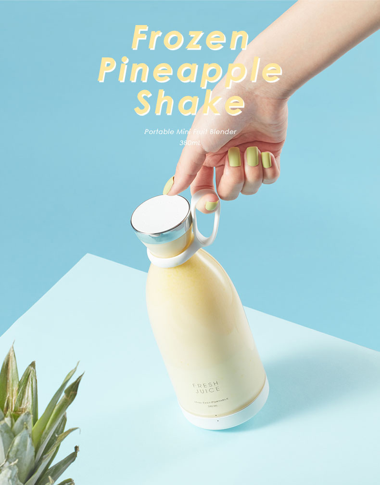
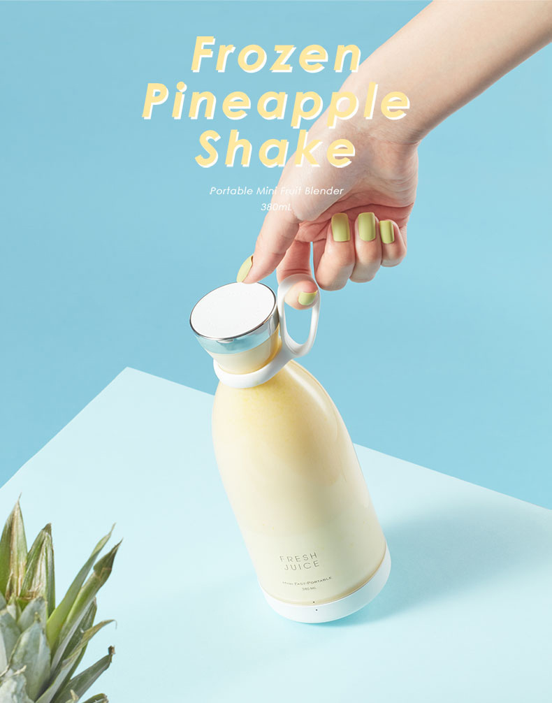
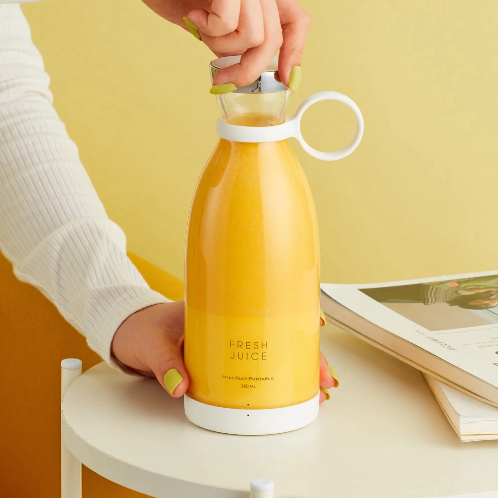

The slideshow allows the buyer have a more detailed look at the blender, justifying the price and further persuading the visitor to purchase. Also, it makes the website looks more professional, as most ecommerce websites will have similar slideshows with multiple product images.
HandyBlend Blender
$64.99
Add To CartProduct Details
HandyBlend is a powerful tool that is simple to use and a new game changer that can help change your lifestyle. The blender is portable and wireless, so you can use it anywhere you go no matter your lifestyle. Make easy, quick drinks full of nutrients and vitamins with a push of a button. A Healthy Diet shouldn't be difficult, so just prep, grab, and go with HandyBlend!
Performance
Provides you with excellent performance in a compact size. In 20 seconds, the blender can blend anything from ice, fresh or frozen veggies, and fruit into a smoothie, then right after, drink straight from the bottle! Overall, extremely simple to operate!
Follow Our Recipes!Blend Anywhere
Take your HandyBlend anywhere and have the convenience of making any drink you're in the mood for. Due to its lightweight and ergonomic design, HandyBlend allows you to enjoy your favorite beverages no matter where you are. Whether you're at the park, out for a hike, at the gym, or on the beach, we're confident it will fit in your lifestyle!
Learn MoreEasy Cleanup
No one likes cleaning, but HandyBlend makes it easy, especially if hand washing is not your thing. HandyBlend can self-clean by simply adding water and soap, then push the button to blend out all the grime! It's also water resistant and dishwasher-safe. It's as easy as 1,2, and 3!
See Demo!